Six body simulation of a spacecraft with a robot arm.
------------------------------------------------------------------------
See also BHinge, BuildCADModel, CreateBody, CreateComponent, DrawSC,
TreeBldCAD, TreeDraw, QLVLH, TimeGUI, Mag, Odd, RK4, TreeH, TreeInit,
TreePlot
------------------------------------------------------------------------
Contents
Global for the time GUI
global simulationAction drawSCOutput
simulationAction = ' ';
drawSCOutput = 'Do Nothing';
Vehicle parameters
lLink = 2.25;
lShoulder = 0.5;
rLink = 0.125;
wCore = 6;
tLink = 4e-3;
densityAl = 2700;
massLink = 2*pi*rLink*lLink*tLink*densityAl;
massCore = 1000;
Initial core states
r = 7000;
v = sqrt(3.98600436e5/r);
rECI = [r;0;0];
vECI = [0;v;0];
qLVLH = QLVLH( rECI, vECI );
q = [1;0;0;0];
omega = [0;-v/r;0];
Initialize
BuildCADModel( 'initialize' );
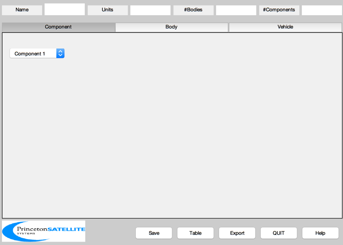
Add spacecraft properties
BuildCADModel( 'set name' , 'Robot Arm' );
BuildCADModel( 'set units', 'mks' );
BuildCADModel( 'set rECI' , rECI );
BuildCADModel( 'set vECI' , vECI );
BuildCADModel( 'set qLVLH', qLVLH );
BuildCADModel( 'set qECIToBody', q );
BuildCADModel( 'set omega', omega );
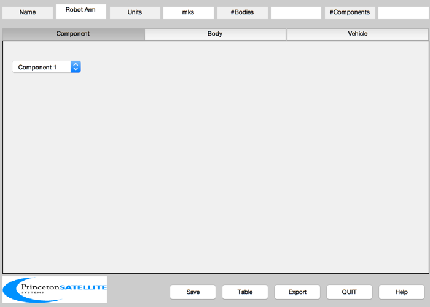
Create the bodies
m = CreateBody( 'make', 'name', 'Core' );
BuildCADModel('add body', m );
rHinge = [0 0 0 0 0;0 0 0 0 0;wCore/2 lShoulder lLink lLink lLink];
bHinge = {};
bHinge{1}.axis = 3;
bHinge{1}.angle = 0;
bHinge{2}.axis = 1;
bHinge{2}.angle = 0;
bHinge{3}.q = [1;0;0;0];
bHinge{4}.axis = 1;
bHinge{4}.angle = 0;
bHinge{5}.q = [1;0;0;0];
for k = 1:5
m = CreateBody( 'make', 'name', sprintf('Link %i',k), 'previousBody', k, 'rHinge', rHinge(:,k), 'bHinge', bHinge{k} );
BuildCADModel('add body', m ) ;
end
Create paths from end bodies to the core
BuildCADModel('compute paths');
Core
m = CreateComponent( 'make', 'box', 'x', wCore, 'y', wCore, 'z', wCore, 'faceColor', 'gold foil',...
'mass', massCore, 'name', 'Core', 'body', 1 );
BuildCADModel( 'add component', m );
Add the links for the arm
for k = 1:5
m = CreateComponent( 'make', 'cylinder', 'rUpper', rLink, 'rLower', rLink, 'h', lLink, 'n', 12, ...
'name', sprintf('Link %i',k), 'body', k+1, 'faceColor', [Odd(k) 0 1], 'mass', massLink );
BuildCADModel( 'add component', m );
end
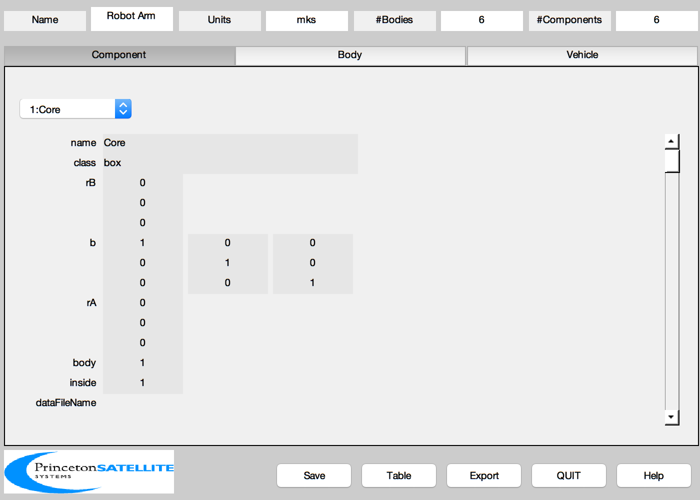
Get the model from the GUI
g = BuildCADModel( 'get model' );
Simulate and display the arm in a loop
body = TreeBldCAD( g );
body(2).torque = 0.1;
[treeDS, x] = TreeInit( body, rECI, vECI );
tSim = 20;
dTSim = 0.1;
nSim = floor(tSim/dTSim);
hPlot = zeros(1,nSim);
tPlot = zeros(1,nSim);
xPlot = zeros(length(x),nSim);
t = 0;
[ ratioRealTime, tToGoMem ] = TimeGUI( nSim, 0, [], 0, dTSim, 'Tree Sim' );
e = [];
e.units = 'mks';
tag = DrawSCPlanPlugIn( 'initialize', g );
for k = 1:nSim
[ ratioRealTime, tToGoMem ] = TimeGUI( nSim, k, tToGoMem, ratioRealTime, dTSim );
hPlot(k) = Mag( TreeH( x, t, treeDS, body ) );
xPlot(:,k) = x;
tPlot(k) = t;
x = RK4( 'Tree', x, dTSim, t, treeDS, body );
t = t + dTSim;
g = TreeDraw( g, x, treeDS );
DrawSCPlanPlugIn( 'update', tag, g );
switch simulationAction
case 'pause'
pause
simulationAction = ' ';
case 'stop'
return;
case 'plot'
break;
end
end
TreePlot( tPlot, xPlot, treeDS, body, hPlot )
Max Momentum Error = 1.6900e-03 Nms

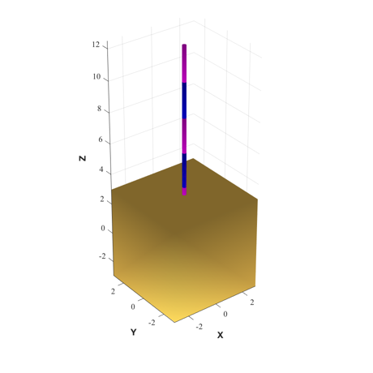 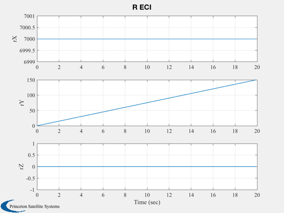 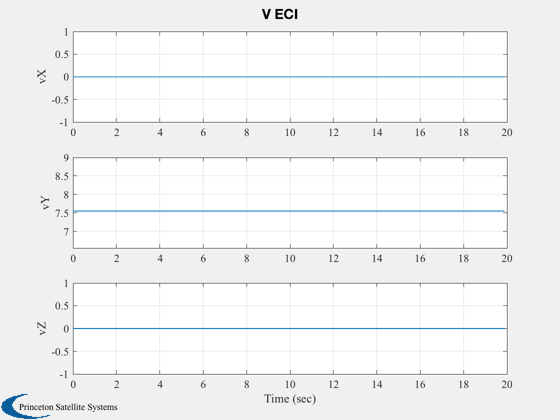 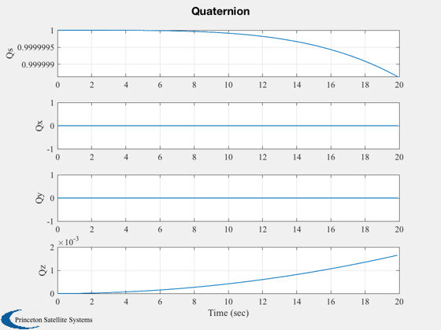 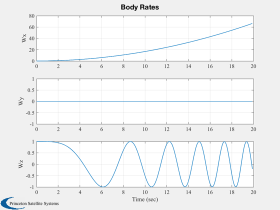 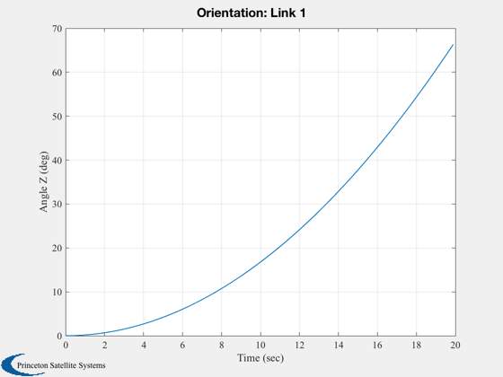 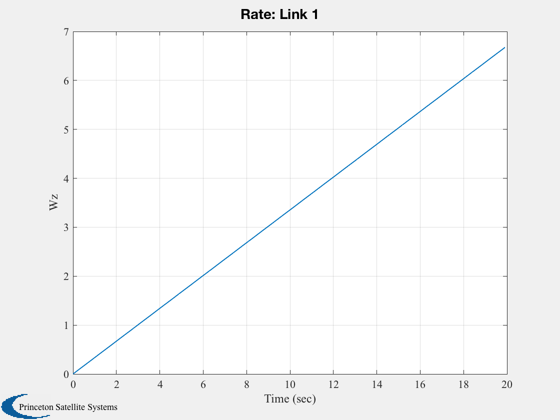 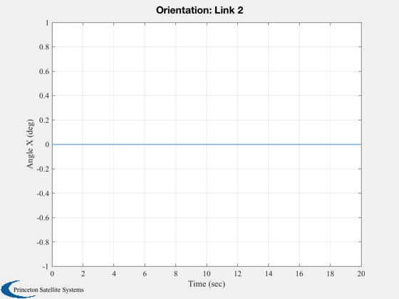 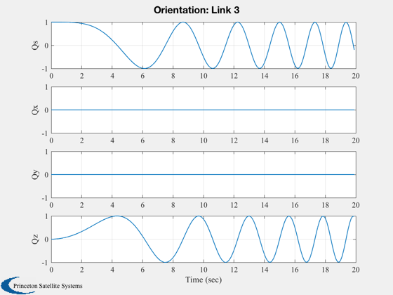 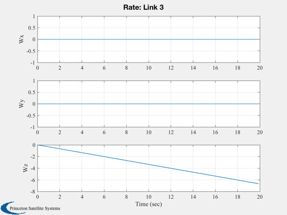 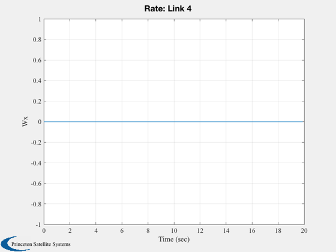 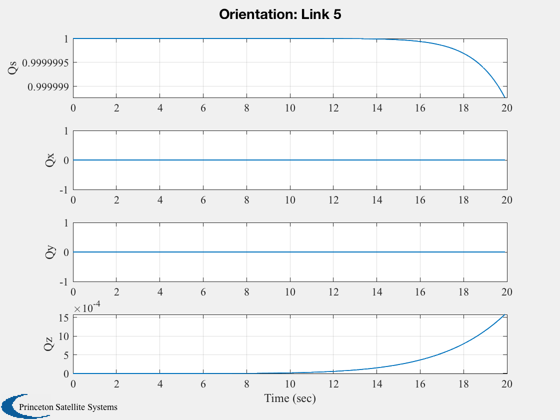

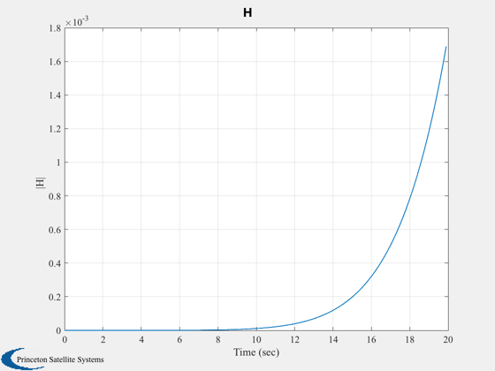